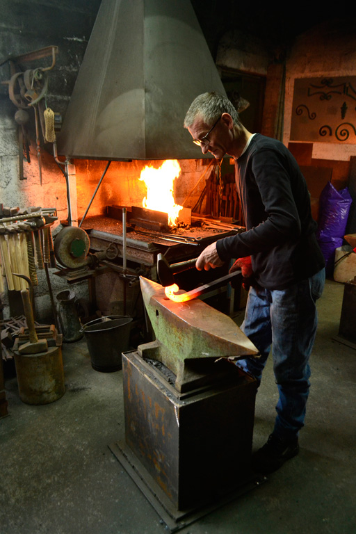
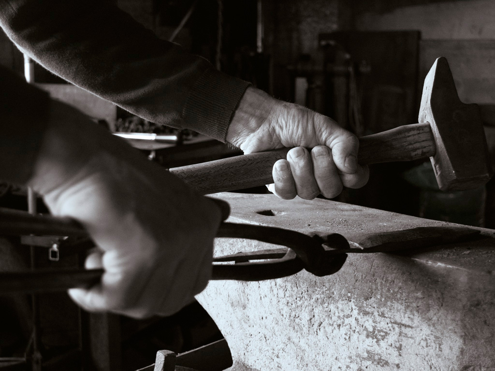

L’atelier de ferronnerie
Vos projets en fer plein
Je vous aide à définir vos besoins en tenant compte du lieu. Je travaille à partir de vos croquis ou de ceux que nous préparons ensemble. Toutes mes pièces sont réalisées à la forge, en fer plein.

De l’usinage à la ferronnerie d’art
Je suis Gérard Caux, maître artisan ferronnier à Wismes, dans le Pas-de-Calais. Après douze années passées en entreprise comme mécanicien tourneur, je me suis installé à mon compte en 1989 dans ce village de l’Audomarois. Mon père et mon grand-père y avaient aussi exercé comme mécanicien et maréchal-ferrant.
Dans mon atelier, je transforme le fer plein à la forge pour créer des pièces sur mesure. Un portail, une rampe d’escalier ou un objet décoratif prend forme à partir d’un croquis, en tenant compte du lieu où il sera installé. Mon parcours de mécanicien me permet aussi de réaliser des travaux d’usinage, de tournage et de fraisage.
